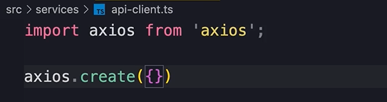

HOME
Extracting a Reusable API Client
Topic im talking about
If you have been coding along, you'll notice that our app component
has grown quite a bit.
We are going to improve this over the next few lessons.
The first problem with our code is that we have duplicated the backend
url multiple times.
To improve this we are going to create a separate module where we
store our default configuration settings for making http calls.
Default http call settings
First, create this new folder...
In this folder we are going to add basic modules that provide services
or functionality to our application.
Servises are about functionality, they are not about UI.
In the services folder create this file...
In this file we are going to create a new axios client with custom
configuration.
Axios config object
First import axios...
Then call axios.create and give it a config object...

In this object we set base url to the url of our backend...
 Notice that we did not include the endpoint in the url.
Notice that we did not include the endpoint in the url.
📢The reason we have only used the base url is because we want our api
client to be reusable.
Maybe we want to reuse it so that we can make request to a comments,
profile, or some other endpoint.
In the same place we have the option of setting the http headers.
These headers will be passed with each and every http request.
⚡Sometimes this is neccessary.
For example, some backends require us to send an API key with every
http request.
If we needed to do that we could say something like...
But we don't need to do that here so leave the headers out.
So we created this axios client, now we need to set it as the default
export...
Modify Imports
Next, go to the app component, and remove the axios import and add
import apiClient.
With this service in place we don't need the reference to axios
anymore, so we need to get rid of the CanceledError class in this
file.
So back to the api-client, add CanceledError to the import and export
it as a named export.
Now we can change our import in the App...
Update references to axios
Now the last step is to replace everywhere that we have called a
reference to axios to apiClient.
The first is here...
The second is here...
Here's another...
And one more...
This makes our code much cleaner, and we no longer have duplicated our
base url all over the place.
So with this service in place, anywhere we want to talk to our
backend, we simply import apiClient, and send http requests.